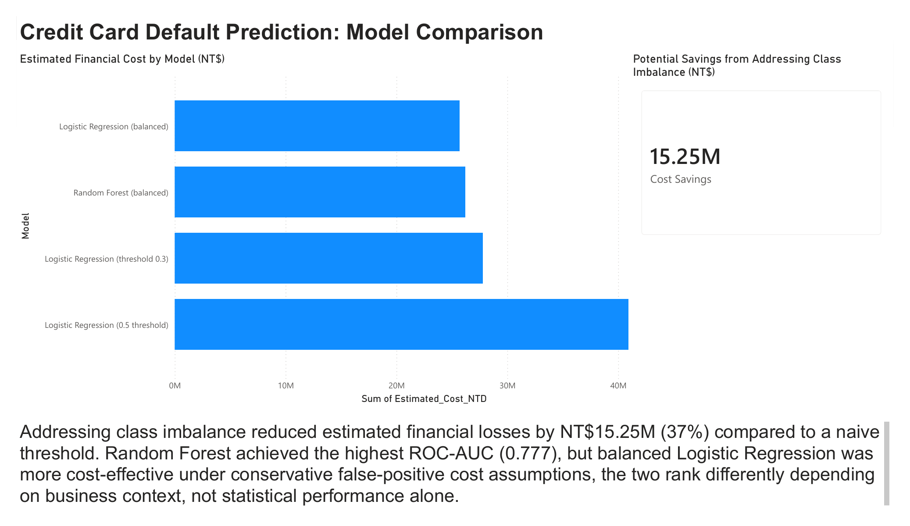
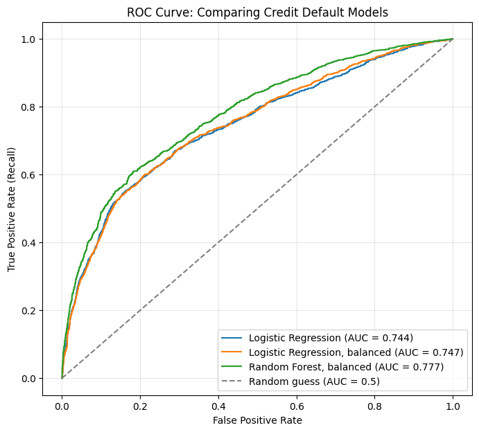

A classification model predicting credit card default risk from 30,000 real client accounts — and a demonstration of why the most "accurate" model was actually the worst business decision.
Most classification tutorials stop at accuracy. This project deliberately doesn't — the real question a lender cares about isn't "how often is the model right overall," it's "how much money does using this model actually save or cost." Those two questions can have completely different answers, and this project set out to prove exactly that using a real, imbalanced credit default dataset.
The dataset covers 30,000 Taiwanese credit card clients (2005) with six months of payment history, bill amounts, and repayment behavior, with the goal of predicting whether each client defaults the following month.
With 78% of clients never defaulting, a model can score well on accuracy while still failing at the one job that matters — catching risky clients.
Translating model errors into estimated NT$ cost — using each client's real average bill as the loss estimate — turned an abstract statistics problem into a concrete business one.
A sensitivity check across four different cost assumptions showed the top-ranked model isn't fixed — it depends on real business context, not a single statistic.
Three of the four most important features were engineered from raw data, not present in the original file — validating the feature engineering step directly.
Confirmed visually via the ROC curve: only changing the class weights or the algorithm itself moved the underlying curve; changing the decision threshold just moved where you sit on it.
Estimated real financial cost of each modelling approach, translated from prediction errors into NT$ using each client's actual bill amount.

All three models plotted together — Random Forest visibly outperforms both Logistic Regression variants across nearly the entire curve.

UCI Default of Credit Card Clients dataset — 30,000 real Taiwanese client accounts (April–September 2005), 23 features covering demographics, credit limit, six months of payment status, bill amounts, and payment amounts, with a binary default target.
Two documented data quality issues were caught and handled explicitly rather than assumed away: EDUCATION and MARRIAGE contained undocumented category codes (0, 5, 6 in EDUCATION; 0 in MARRIAGE) not covered by the official data dictionary, folded into existing "Other" categories; and the PAY_ status columns contain two undocumented values (0 and -2) that together make up over half the dataset — kept as-is, since they couldn't be dropped, but flagged explicitly as an interpretive ambiguity rather than given an invented confident meaning.
Rather than feeding 18 raw monthly columns directly into the model, six behavioral features were engineered to capture trends rather than snapshots: average and maximum payment delay, count of months delayed, average credit utilization, 6-month bill trend (growing vs. shrinking debt), and a payment-to-bill ratio. Two of these initially produced statistically invalid results (a payment ratio ranging from −546 to 797) due to division by near-zero bill amounts — caught during review and fixed by capping values to a realistic range rather than silently trusting the raw output.
Baseline Logistic Regression (0.5 threshold): 81% accuracy, but only 30% recall on actual defaulters — the class imbalance problem in action.
Two imbalance-handling approaches tested independently: class_weight='balanced' (changes how the model learns) and manual threshold adjustment to 0.3 (changes how predictions are read from the same model).
Random Forest added as a second model, also with balanced class weights, to test whether a non-linear model could better separate the classes.
Cost-based evaluation: converted each model's false negatives and false positives into estimated NT$ loss, using real client bill amounts rather than an assumed flat cost.
Sensitivity check: re-ran the cost comparison across four different false-positive cost assumptions (5%–30% of bill amount) to test whether the ranking was robust or fragile.
| Model | Recall (defaulters) | ROC-AUC | Est. Cost (NT$) |
|---|---|---|---|
| Logistic Regression (0.5 threshold) | 0.30 | 0.744 | 40.9M |
| Logistic Regression (threshold 0.3) | 0.53 | 0.744 | 27.8M |
| Logistic Regression (balanced) | 0.60 | 0.747 | 25.7M |
| Random Forest (balanced) | 0.61 | 0.777 | 26.2M |
The headline finding isn't which single model "wins" — it's that the statistically best model and the financially best model were different models, and the gap between the naive approach and any imbalance-aware approach was large and consistent (30–40% cost reduction) across every cost assumption tested.
The dataset demonstrates methodology — imbalanced classification, cost-sensitive evaluation, feature engineering — rather than making a claim about current UK consumer credit risk specifically.
The false-positive cost (10% of bill amount, tested from 5–30%) is a reasonable, stated assumption. A real deployment would need actual cost figures from the business rather than an analyst's estimate.
PAY_ values of 0 and -2 make up over half the dataset and aren't officially defined by the data provider. They were kept in the model as-is, but their exact meaning is an informed interpretation, not a confirmed fact.
Given the dataset's size (30,000 rows) this is a reasonable choice, but a production model would benefit from k-fold cross-validation to confirm the reported metrics are stable.
Full analysis notebook and the Power BI file are available on request or via GitHub.